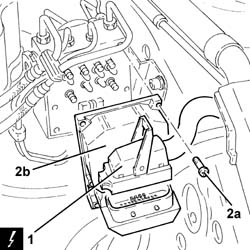

3340A20 ABS ELECTRONIC CONTROL UNIT - R+R
- Path
- Procedures > 33 BRAKING SYSTEM > 3340 ANTI-LOCK BRAKE SYSTEM (ABS) > 3340A ABS CHECK/ADJUSTMENT DEVICES > 3340A20 ABS ELECTRONIC CONTROL UNIT - R+R
- Kind
- repair procedure (removal / refitting; the operation number is the code)
- Applies to
- all engines; all production periods
- Interactive page
- https://sloeber94.github.io/elrnDB-aGt/en/#/125001363
Applies to: all engines; all production periods
 Removing
Removing
 Refitting
RefittingProceed with removal
Proceed with removal
1. Disconnect the electrical connection from the A.B.S. hydraulic and electronic control unit.
Op. 5530B52 BATTERY DRIP TRAY/SUPPORT - R.R.
2. Undo the bolts (2a) and remove the ABS electronic control unit (2b).
Name | Connector | |
|---|---|---|
1 | ABS control unit | See M50 ABS CONTROL UNIT ( FRONT ) |

Applies to: all engines; all production periods
Refitting
RemovingPlace the ABS electronic control unit back in its housing and secure it using the bolts.
Connect the electrical connection to the A.B.S. hydraulic and electronic control unit.
Proceed with refitting
Op. 5530B52 BATTERY DRIP TRAY/SUPPORT - R.R..
Proceed with refitting